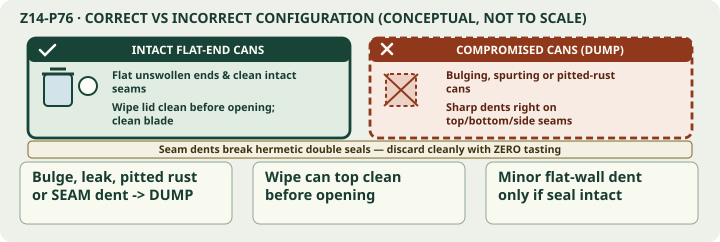

Z14-P76 · Food production and preservation · New manuscript
Screen commercial cans and dry packages for structural safety defects
Spot compromised seams, swelling, and rust pinholes in commercial pantry cans before botulism or chemical spoilage occurs.
When it applies · Purchasing, rotating, and opening commercially canned meats, vegetables, soups, fruits, and dry packages.
Equipment · Bright inspection light, manual can opener, and clean wipe cloth for can tops.

Actions
- Inspect EVERY commercial can carefully before opening: DISCARD IMMEDIATELY any can that is bulging/swollen at the ends, leaking or spurting when punctured, deeply dented right on a top/bottom seam or side crease (sharp dents break the hermetic double seam!), or heavily rusted enough to pit through the metal.[P15, P10]
- Wipe dusty commercial can lids clean with a damp cloth BEFORE cutting open so pantry dust and rodent residue never fall directly into the food, and wash the manual can-opener blade cleanly after use.[P15, P16]
- Recognize that a minor shallow smooth dent on the flat side wall AWAY from seams generally leaves the seal intact if unswollen and unrusted—whereas ANY seam crease, sharp point dent, or bulge is an automatic zero-taste discard.[P15, P10]
Failure recognition · Opening a sharply seam-dented, slightly swollen bargain can of soup and eating it because it was still inside its printed Best By date.[P15, P10]
Verify · Confirm flat unswollen ends, zero sharp seam dents or pitted rust, wiped can top, and clean opener blade before every meal.[P15, P16]
Stop or change course · Swollen, spurting, foaming, foul-smelling, or seam-compromised commercial cans must be discarded cleanly without tasting.[P10, P15]
Evidence and editorial notes
- P10 · NCHFP · Identifying and Handling Spoiled Canned Food (current web edition)
- Section: Identifying and Handling Spoiled Canned Food · Conditions: Suspect home-canned food; identify sealed versus open or leaking without exposure
Support: Do not taste. Isolate from people and animals and use current NCHFP or local public-health disposal advice.
Limitations: A sealed lid alone cannot establish a safe process. Reprocessing a sound unsealed jar has separate conditions. Suspected exposure is P23. · Conflicting evidence: See A02 claim audit for boundaries.
Editorial note: Anchors spoilage inspection and safe disposal in Z14. · Specialist reviewer: Food microbiology and public health
Primary source · checked 2026-11-24 - P15 · FEMA / Ready.gov · Emergency Food Supply (current web edition)
- Section: Emergency Food Inventory > Non-Perishable Rotation, Dietary Needs, and Tools · Conditions: Household multi-day to 30-day emergency pantry planning
Support: Build a rotated pantry of familiar shelf-stable foods requiring minimal water and no refrigeration (canned proteins/vegetables, dry grains/legumes, nut butters, infant/medical/pet diets), keep a manual can opener, and mark purchase/rotation dates clearly (FIFO).
Limitations: Do not invent unverified multi-decade shelf lives; commercial "Best By" dates reflect quality while damaged, rusted, or dented-seam cans pose safety hazards. · Conflicting evidence: None; aligns with FSG-4 and NCHFP storage hygiene.
Editorial note: Grounds household food inventory, FIFO rotation, and can-integrity screening. · Specialist reviewer: Household preparedness and food safety
Primary source · checked 2026-11-24 - P16 · USDA / FDA / CDC · Four Steps to Food Safety (current web edition)
- Section: Clean, Separate, Cook, Chill > Produce Washing and Cross-Contamination · Conditions: Garden-to-kitchen harvesting, food prep, and preservation workspaces
Support: Wash hands 20 seconds with soap and safe water, scrub firm produce under running safe water before peeling/cutting, keep raw animal foods strictly separate from ready-to-eat produce, and sanitize prep surfaces and utensils between tasks.
Limitations: Washing produce with soap, detergent, or bleach is unsafe and not recommended. · Conflicting evidence: None; extends F01–F03 into garden harvest and home preservation.
Editorial note: Anchors kitchen sanitation and cross-contamination barriers in Z14. · Specialist reviewer: Food safety and public health
Primary source · checked 2026-11-24
Current assessment · A04-P16 (2026-11-25) · Bounded support newly confirmed (A04): Verified handling sequence for food preparation using safe water. No advice here for a water emergency or decontaminating a specific product. Limits: Specialist review PENDING (Food safety and public health); publication HOLD. All release decisions pending.
Source lineage · USDA FoodSafety.gov and Ready.gov Food; new manuscript · Classification · New manuscript.